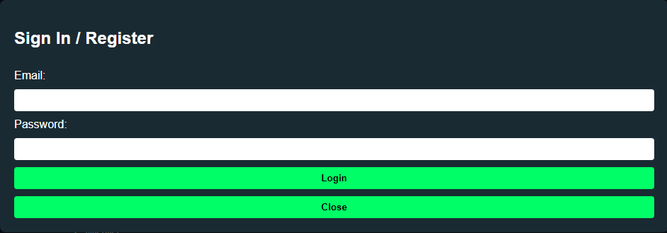

HTML-код та CSS-код
#form-modal {
display: none;
position: fixed;
inset: 0;
background: rgba(0,0,0,0.7);
}
Зображення
Теорія
Селектор ідентифікатора — це тип CSS-селектора, який вибирає одиничний HTML-елемент за його унікальним ідентифікатором. Ідентифікатор визначається в атрибуті id у HTML-елементі. Селектори ідентифікаторів починаються з символу решітки (#) перед ім'ям ідентифікатора.
Наприклад, якщо ви хочете стилізувати елемент з ідентифікатором main-title, ви можете використовувати селектор ідентифікатора так:
#main-title {
color: blue; /* Змінює колір тексту на синій */
font-size: 24px; /* Встановлює розмір шрифту */
}
У HTML це виглядатиме так:
<h1 id="main-title">Цей заголовок має стиль з ідентифікатором.</h1>
В цьому прикладі заголовок <h1> отримає синій колір тексту і розмір шрифту 24 пікселі.